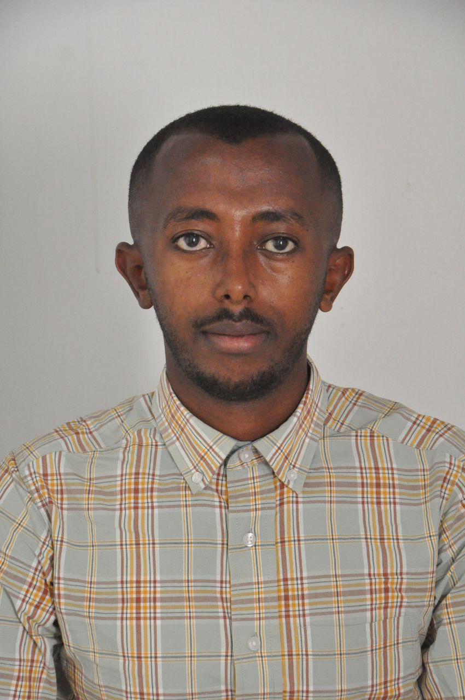

Nafiad Abdi

Summary
A committed, passionate, and respected professional who is recognized as a great team player,
with great technical and theoretical skills in areas of auto mechanics. Very friendly and always
eager to learn more. A young enthusiast who wants to be part of the future technologies that deal
with automation and robots.
Education
B.Sc. in Mechanical Engineering, Wolkite University, 2016-2021, Wolkite, Ethiopia
Areas of Expertise
Manufacturing | Automotive Maintenance | Maintenance | Installation | Material Handling |
Manufacturing Process | Electronic System | Industrial Management and Engineering.
Professional Experience
Defense Logistics Main Department of Heavy Vehicle Overhaul, June 2017-Sept.2017,
June 2018-Sep.2018, June 2019-Sep.2019, June.2020-Sept.2020, December 2020-March
2021.
- During Internship
- Worked on Maintaining and servicing different spare parts of heavy vehicles
- Done diagnosis of motors
- Worked as a point person for roadside assistance
- Participated on designing engines
- Worked on body repairs
- Projects
- Successfully Completed Designing and Analysis of Charcoal Briquette making machine.
- Successfully completed how to design and analyze gear box.
- completed designing and analysis of Flexible coupling.
- Successfully designed Manually Operated Hydraulic Forklift
Computer Proficiency
- MS-office Suit
- Solid work, Catia and AutoCAD
- Java, C++, Python
Key Skills
- Strong problem solving and trouble shooting skills
- Quick analytical understanding and multi-tasking skills
- Excellent inter-personal communication skills
Other